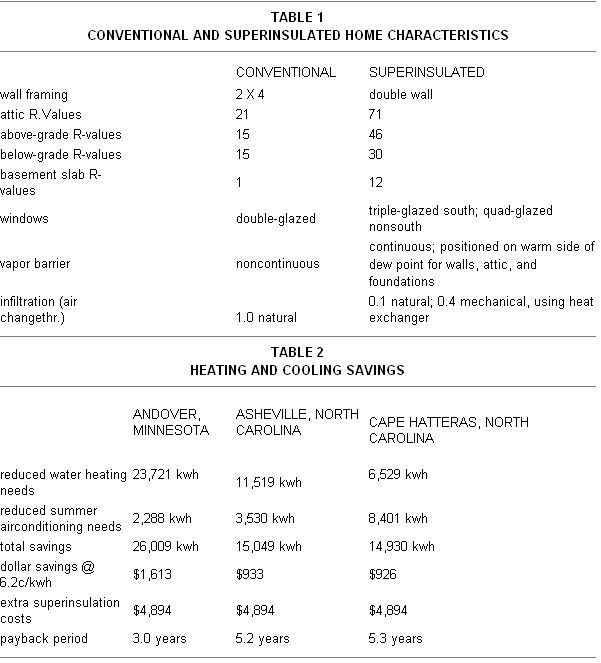

As most folks are well aware, an attempt to achieve a more self-reliant lifestyle-often involves a good bit of problem solving ... and much of the time there just doesn't seem to be a ready supply of answers to the questions that come up. We're pleased to present, then, the following column . . . in which a number of well-known individuals front various a areas of expertise (such as gardening, alternative building methods, hydroponics, water toxicity, and wood heating, to name a few) have agreed to act as "consultants " for you.
If a question concerning some aspect of selfreliant living has You stumped, send it to Ask Our Experts, THE Mother Earth News? 105 Stoney Mountain Road, Hendersonville, North Carolina 28791. Please dont expect personal replies, though. The most frequently asked questions will be answered here?and here only?so that we can all benefit from what these folks have to say.
We've retired to the North Carolina coast and plan to build an energy?effilcient home there. We're receptive to just about any type of structure but do want something that'll offer significant energy savings in relation to our initial investment. Is superinsulated housing actually cost-effective in the climates typical of the Southeast?
Definitely. A superinsulated home can be cost-effective on the cold plains of central Minnesota, in the moderate mountain climate of western North Carolina, or in the warm ocean climate of Cape Hatteras . . . essentially because it can contain-as well as keep out-both cold and heat, much as does a vacuum bottle.
Table I briefly summarizes the construction and insulation differences between a conventional and a superinsulated house, though the recommended insulation levels would depend on the regional costs of labor and materials, as well as on the climate.
Table 2 shows heating and cooling savings for a typical superinsulated home (if the design, construction costs, and materials costs are the same for each example) in the locations I've mentioned.
In a nutshell, winter heating needs can be reduced in a superinsulated structure by more than 80% in Minnesota, and by 94% to 97% in the North Carolina locations. The same dwelling designed for the Minnesota climate can cut air-conditioning needs by 60%.-Michael Scott.
Michael Scott, a superinsulation pioneer who has provided consulting services for numerous government and utility organizations, is currently writing a book on superinsulated construction.
My family's sole source of heat is one woodburning stove, and-living in chilly Minnesota?we obviously can't afford to go without it for long during the dead of winter. My problem is that creosote accumulates in my chimney at a rate that demands cleaning at least once a month. And being forced to let the system cool in January is a real hardship on my family, as you can imagine! So I'd like to do everything possible to cut down on the frequency of those "sweepings".
The dealer who sold me the stove told in me that if I burn seasoned hardwood I shouldn't have to clean more than twice a year. Other people have suggested that it's not so much what wood one burns but rather how one burns it ... that is, that it's important to keep the fires hot enough to consume the creosote in the smoke. Still others suggest that the problem might be with my chimney. What I'm wondering is this: Just how much substance is there to the contention that green or softwood produces more creosote than does seasoned fuel or hardwood?
There is some truth in what all your consultants have told you. Softwoods often produce a little more creosote than do hardwoods, but not under all circumstances. However, the effect of wood type is not as important as chimney type and location, and this-in turn-isn't as crucial as is how you operate your stove.
In our experiments, we've found that -depending on the air setting on the test stove and the fuel moisture content?pine (a softwood) resulted in anywhere from the same amount of creosote as oak to about four times as much. And, although this is by no means a trivial difference, it is less significant when compared with the effect of the heater's air setting itself. We observed up to 48 times more creosote with a smoldering fire than with a hot flaming fire using the same fuel.
Thus, the most important and easiest way to reduce creosote buildup is to burn the fuel rather than smoke it. Smaller fuel loads and larger air settings are the key. This will require more frequent refueling, of course, but you won't burn significantly more wood to produce the same amount of heat.-Jay Shelton.
Jay Shelton is the director of Shelton Energy Research and the author of three books and many articles on solid fuel heating. For a description of the publications available from SER, send a self-addressed, stamped envelope to Shelton Energy Research, Dept. TMEN, P.O. Box 5235, Santa Fe, New Mexico 87502.
I'm a vegetarian who eats mostly raw fruits, nuts, and vegetables. The biggest problem I've encountered is locating reliable, helpful nutritional information. After reading different opinions everywhere, I concluded that I must figure things out for myself. Now, I try to eat only what makes me feel good.
I'd like to know your views on testing foods for their nutritional value. Also, could you tell me how the government tests food for nutritional content, and if it's possible for individuals to determine such things?
We've worked out a satisfying, simple, and health-yielding diet for ourselves, which we have described at length in our book Simple Food for the Good Life. Our diet is based upon our own experience and is not really scientifically derived, but it works ... for us. The proof is that we keep well at our advanced ages.
For "reliable nutritional information" and "government tests", consult the writings of such experts as Beatrice Trum Hunter or Frances Moore Lappe. -Helen and Scott Nearing.
The Nearings began homesteading, in 1932, on a run-down farm in Vermont ... and then later moved to the Maine coast, where you can find them today, still building the stone structures they're famous for and raising most of their own vegetarian diet. For a list of their various publications, send a self-addressed, stamped envelope to the Social Science Institute, Dept. TMEN, Harborside, Maine 04642.
|
|
 |
|